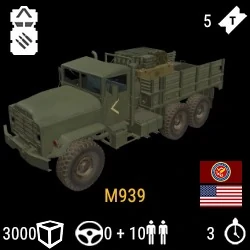
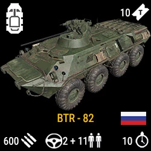
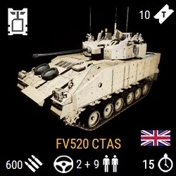
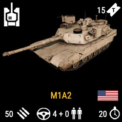

Kits and their weapons

Each class is unique...
Command and support

squadleader
Squadleader class has....
Lead crewman
leadcrewman is used for

Lead pilot
lead pilot is

Direct combat
Fire support
Specialist
Sapper/Combat engineer
The sapper/Combat engineer class is an allaround trumpcard class. The sapper is the version of the class that only certain factions have and is arguably stronger because of key item. That is the IED (Improvised Explosive Device) This piece of weaponry has the capabality to destroy a lot of implacements and vehicles in 1 blow(pun intended). The class is unique due to its equipment. It can mines, inplacements and other explosives

Vehicles
There are a lot of different vehicles in squad. Every single faction has unique vehicles which would make this list very long, but All vehicles can be classe into 4 categories
- Transport (Light)
- APC (medium)
- IFV (heavy)
- MBT's (Extra heavy)
Transport
Most of these vehicles are used for transporting supplies and troops. They are very fragile and almost never have any weaponry to defend themselfs. Most common example of a transport vehicle is the LOGI (logistics vehicle)
APC
APC stands for Armored Personal Carrier. This is a more protected way to transport personal. Most APC's have light weaponry and are decently armored. Best example of an APC is the russian BTR-82A
IFV
This stands for Infantry Fighting Vehicle. This is pretty heavily armored and wont be taken out but a rocket or 2. Vehicles in its class have a large arsenal of weaponry that can contain TOW missles, large 30>+mm canons capable of destroying any vehicle and 50-cal machine guns. My favorite example of an IFV is the British FV520 CTAS "Warrior"
MBT
Last but not least we have the Main Battle Tanks. These stand at the top of any match in terms of firepower. They have a big main 105mm canon with up to 5 differant type of round raging from SABOT (anti tank) to Fragmentation round againts infantry. You will need multiple well placed rockets to take one of these down. Most wellknown tank of all is the American M1A2 Abrams
